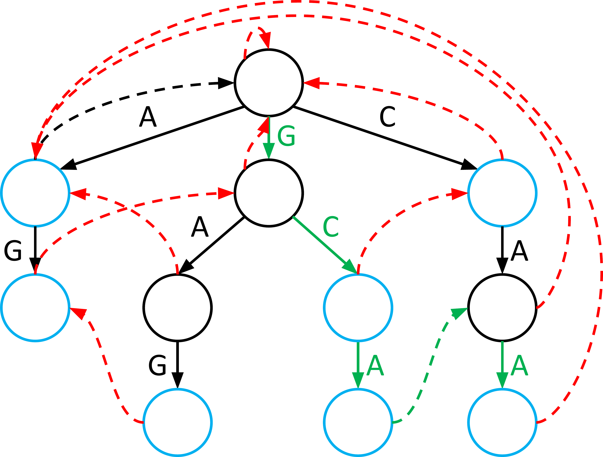

AHO CORASICK
Como funciona o aho corasick

Criado por Alfred V. Aho e Margaret J. Corasick, em 1975, O Algoritmo de aho-corasick é um algoritmo de busca conjuntos de padrões finitos de um texto, que busca encontrar quaisquer padrões que estejam lineares e de acordo com o padrão de busca da string. O algoritmo é usado para reconhecer todas as ocorrências de um conjunto de palavras em um texto.
AHO CORASICK
Escolha do Tema

O projeto aborda implementar um software em que seja possível a busca de informações sobre empresas no município de Erechim com informações 100% confiáveis, implementando um algoritmo de pesquisa em String, mais especificamente, o algoritmo de Aho-Corasick, utilizando um armazenamento de dados em arquivo.
AHO CORASICK
Prós
Alguns prós de fazermos a ultilização do algoritmo de Aho-Corasick é que é possível guardar algumas informações adicionais na trie, ou usar uma forma diferente de armazená-la para torná-la ainda mais poderosa (Peter Weiner, “Linear pattern matching algorithms,” in 14th Symposium on Switching and Automata Theory, 1973.) ( Ukkonen, Esko, “On-line construction of suffix trees”, in Algorithmica, 1995, 14 (3), pp. 249–260).
Além disso o Aho-Corasick é um dicionário de correspondência eficiente algoritmo que corresponde a cada elemento do dicionário ou conjunto de palavras dentro de um fluxo de entrada. O algoritmo constrói um TRIE usando FSM com links extras chamados links de falha apontando para algum nó dentro do TRIE para percorrer para elementos não correspondentes do dicionário. (Mohammad Equebal Hussain, 2021 )
AHO CORASICK
Contras
O algoritmo consome muito do espaço em memória: embora o algoritmo de Aho-Corasick seja eficiente em termos de uso de memória em comparação com outros algoritmos de busca de padrões, ele ainda pode consumir uma quantidade significativa de espaço em memória para armazenar as estruturas de dados necessárias para o seu funcionamento. Isso pode ser um problema em dispositivos com recursos limitados ou em aplicações que precisam processar grandes volumes de dados.(Moore, J Strother outubro de 1977)
Desempenho em padrões muito curtos: o algoritmo de Aho-Corasick pode ter um desempenho inferior em padrões de busca muito curtos. Isso ocorre porque o algoritmo precisa processar cada caractere do padrão de busca, o que pode ser ineficiente em padrões muito curtos.
Limitações em aplicações específicas: o algoritmo de Aho-Corasick pode não ser adequado para todas as aplicações de busca de padrões. Por exemplo, em algumas aplicações de processamento de linguagem natural, pode ser necessário levar em consideração a ordem das palavras ou o contexto em que elas aparecem.(Boyer, Robert S. em outubro de 1978)